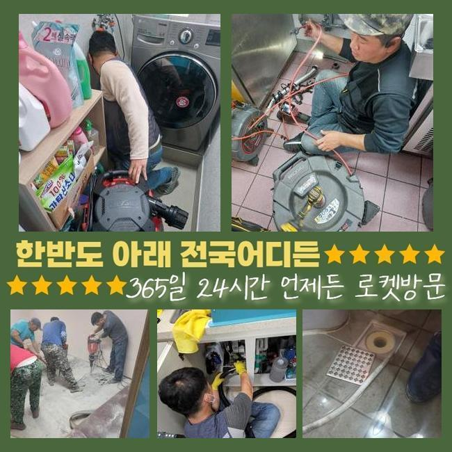
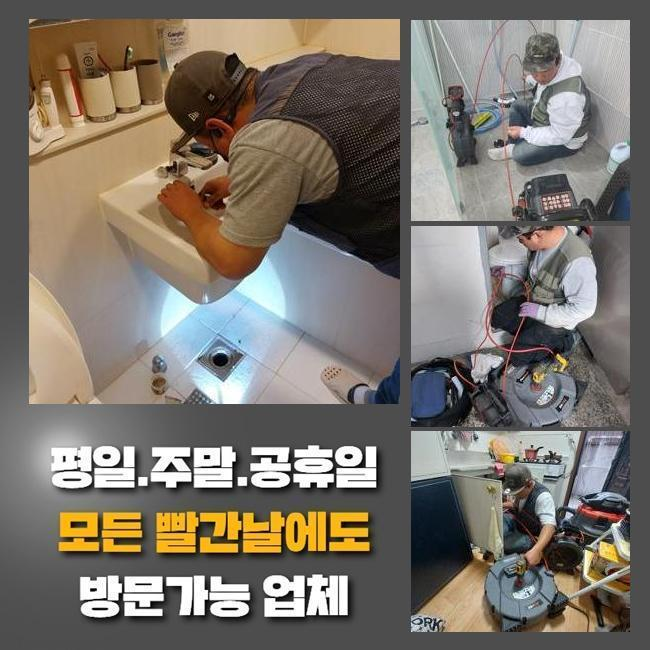
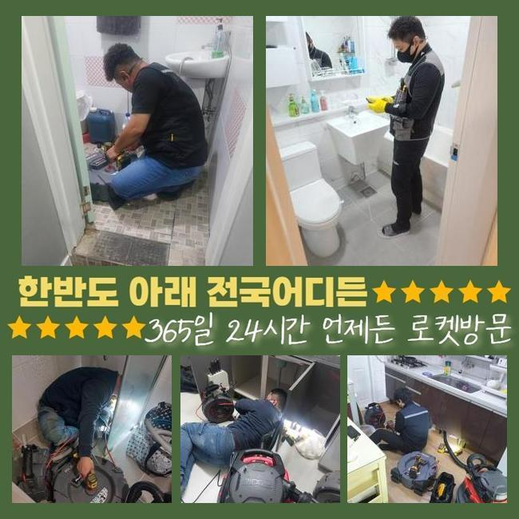
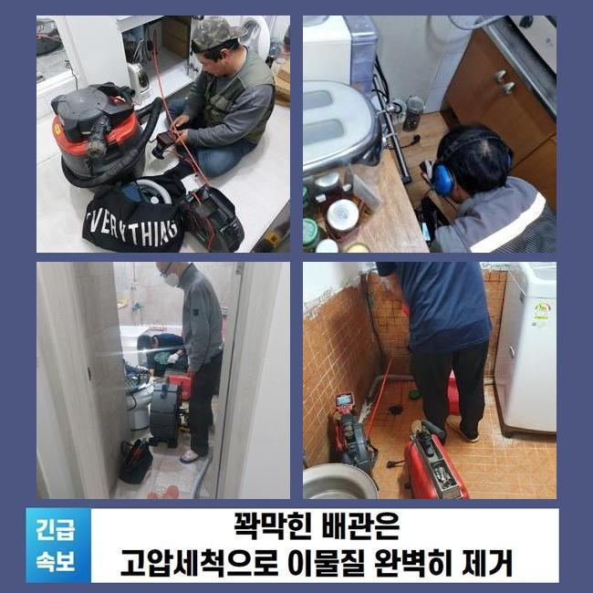
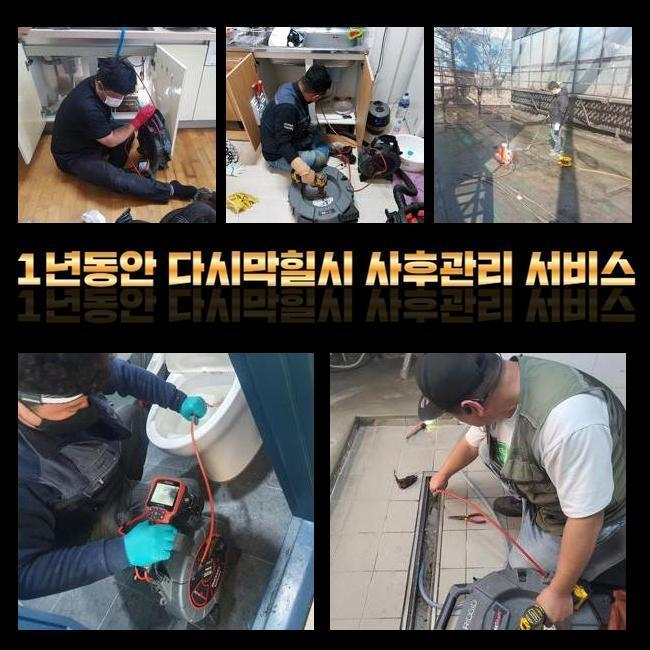
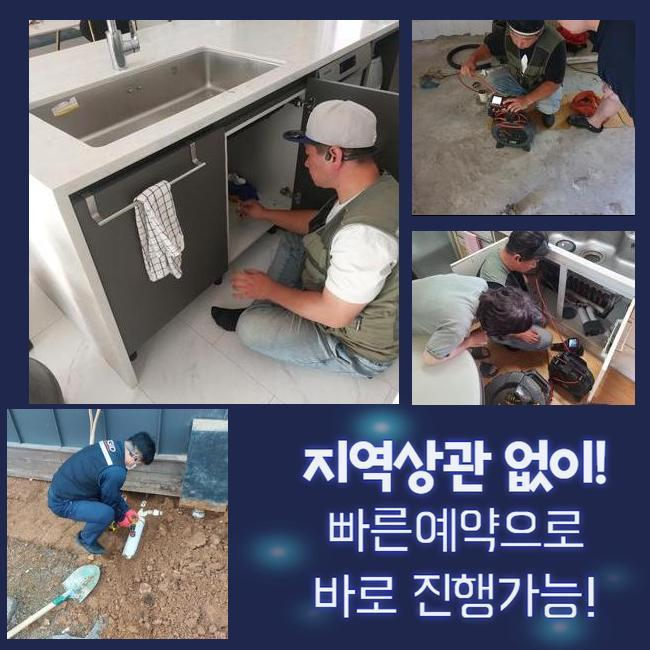
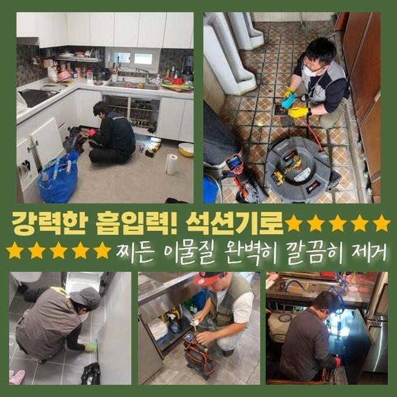

🏠 송파구 잠실동욕실막힘 가락2동 하수구뚫는업체 누수탐지
용인시 처인구 배관막힘 전문 시공 후기

📋 작업 개요
- 위치: 용인시 처인구, 수원시 영통구, 화성시 동탄
- 서비스 유형: 배관막힘, 누수수리, 고압세척
- 작업 일시:
- 업체명: 하수구수사대 (010-5615-2118)
🔍 문제 상황
송파구 잠실동욕실막힘 가락2동 하수구뚫는업체 누수탐지
집이나 상업용 건물 그리고 학교같은 곳들에서 하수의 흐름이 끊어지는 상황을 최소 한 번은 체험해보셨을 것입니다
이렇게 되면 하수를 방출하기가 난감해지고 냄새와 같은 골치아픈 일들까지 같이 유발되기 때문에 이것저것 따지지말고 조속히 복구와 수정을 해줘야 합니다
청소 서비스의 공사비용을 잘 모르고 엄청날거라고 예측하여 자가 청소를 실시하기도 하지만 이는 유지기간이 극도로 짧은 임시조치일 뿐입니다
얼마 전 찾았던 현장은 화장실 기능 고장으로 힘듦을 버티시던 의뢰인이 계신 곳이었어요
고객님을 만나보니 원만하지 않은 흐름이 뜬금 없이 어제부터 나타나서 놀랐다 하셨네요
목욕을 하시는 중에 물의 흐름이 더딘 것이 뭔가 잘못됐다 싶어서 데이터를 찾아봤더니 이건 하수구 고장의 증세일거라 여겨지셨다고 합니다
녹여준다고 광고하는 용해제를 내부로 주입했으나 미미한 변화만이 있어서 클리닝 재료들을 몽땅 부어버렸는데 상황은 반대로 손쓸 수 없이 나빠졌다합니다
다른 분이 액체클리너 효과가 대박이라는 글에 바로 사봤지만 실상은 개선되지 않아서 저희측에 의뢰를 주셨어요
돈을 절약할 수 있다는 생각 하에 용감하게 홀로 도전하시는데 종합적으로 봐야하는 문제기에 완전히 수습하긴 쉽지않아요
기존의 막힘 수준보다 심화시켜버릴 수도 있으며 체력적으로 소실되기만 하는 얻는 게 없는 투자일 수 있어요

🔎 원인 분석
💡 전문가 진단: 정밀 진단 장비를 사용하여 슬러지의 고착 여부를 판명하고 타격/세척 작업을 실시했습니다.
문제가 터진 곳을 보니 막히기 시작한 건 오래 됐을거라 자연스럽게 눈치를 챘는데 하수구의 출구까지도 찰랑찰랑 물이 집적된 상태였으며 바깥으로 물이 범람하는 것도 보니까 심각하다 싶었죠
전문진이 다년간 만들어온 업력을 바탕으로 판단해보니 안쪽에 이물질이 쌓인 게 분명했어요
확신을 내릴 수 있을 정도로 상태를 검사하려면 배관용 카메라의 운용이 들어가야된다 싶어서 촬영기기를 살포시 내려보냈습니다
긴 배관으로 이 카메라를 내려보내서 관찰하니 생각보다 엄청난 찌꺼기들이 상당량 집적된 모습이었어요
이같은 문제점을 고객님과 같이 관측을 하면서 질의응답도 받고 있어요
보이는 부분 외에도 추가적인 문제가 있다는 점이 예상되어서 다른 이물질의 종류나 상태를 알아차리려는 목적으로 더 아래 방향으로 카메라를 넣어서 전반적으로 살펴보았어요
그 밑에는 단단한 석회들이 단단하게 합체된 채로 물길을 빈틈없이 봉쇄하고 있었는데 이 부분이 시발점이라는 느낌이 강하게 들었습니다
섬유 조각이나 머리카락같은 여러가지 찌꺼기가 층을 이루다가 응축된 한 덩어리로 결합된 형태가 바로 석회덩어리에요
강한 석회화가 이루어졌다면 간단한 방책만 발휘해서는 간에 기별도 안갈겁니다
강하게 뭉쳐졌기 때문에 배관 라인에 세게 달라붙어서 소소한 장비의 힘으로는 한참 소요되고 결론은 나쁠 수 있어요
어떤 상황이라도 이겨나가는 유연함을 보유하고 있는 전문가에게 해결해달라 의뢰하신다면 훨씬 건강한 배관으로 바뀌게끔 서비스를 해드리게 돼요

🔧 작업 과정
속히 정상화를 할 수 있게 잘못된 곳을 다 고쳐서 잘 돌아가는 배관 시스템을 다시 제공받으실 수 있어요
예방 용도로 전문가를 불러서 간편 세척도 받으신다면 불편함없는 시원스러운 배수를 이끌어갈 수 있어요
다른 막힘건들을 떠올려보니 들어있는 찌꺼기의 양과 단단함을 따져보니 쉽게 극복할 수 있는 사안이 아닌 심화된 문제를 안고있다 싶었어요
무작정 빨아당기는 게 아니고 사전에 플렉스샤프트를 적용해서 오염원을 작은 사이즈로 자르는 업무를 우선 시행해야 할 듯 했네요
달라붙은 이물질 덩어리가 제거 가능할만큼 소규모거나 와해되기 쉽다고 보인다면 흡입장치만을 써서 흡수시키는 활동만으로도 모두 해결될 수도 있어요
허나 내측에서 발견된 오염원이 빠싹 메말라 굳어버렸고 대형 규모였던만큼 파편으로 만드는 단계가 빠져서는 안 될 듯 했습니다
샤프트 장비를 자세히 설명드리면 케이블의 끝 부분에 사슬이 달려있는데 지속적으로 회전을 하게 되는데 오염원에 마찰을 해서 작은 입자로 나뉘게 해줘요
낭창한 샤프트 노즐을 깊숙하게 넣어서 윗부분부터 청소해 나가고 실황 모니터링을 해가면서 꽉 막힌 곳이 다 없어지도록 철저한 배관 청소를 완수할 수 있었답니다
숙련공의 손기술이 근본적이라 보는 연유는 돌 덩어리처럼 뭉친 오물들이 광범위하게 방출되면 배관 벽이 손실을 만들 수 있어서 입니다
낡은 배관의 일부가 치명적인 크랙이 일어나지 않도록 많은 업력을 갖춘 기술공이 리드하는 편이 좋습니다
작게 분리된 석회의 조각들이 깊숙한 영역으로 빠져버리게 될 위험도 따르는데 괜찮겠지 가볍게 넘겨버리면 이런 하수관의 장애가 재차 발현될 수 있는거죠
작업의 최종적 끝까지 계속 집중을 이어가며 일을 해갔고 여전히 남은 미세한 찌꺼기 조각들이 떠다니는지 내부 상황을 제대로 점검하는 것도 의무입니다
부유하는 잔 조각들도 남김없이 흡입작업을 완수했고 완료라고 결론내리기 이전에 물을 받아서 흘려보내보면서 여러 차례 체크했어요
구체적으로 변한 부분을 보고를 올려야 마음이 편하실 것이므로 관측을 돕는 배관카메라를 끝으로 도로 주입하게 됐습니다
어떻게 변했는지에 대한 곳곳을 카메라로 비춰보면서 안심하셨다고 보인다면 마지막 페이지를 넘겼네요
앞으로도 계속 말끔한 배관을 이어가실 수 있도록 지속가능한 배관 관련 팁도 충실히 전달드렸어요
간단한 문제로 치부하고 홀로 고군분투하시기도 하는데 괜히 건드리다가 문제점을 더 확대할 우려가 있으며 손댈 곳이 더 많아져요
분명 오래가지 못하는 경우에 그치기 때문에 제대로 낫게 만드려면 전문도움을 받는 게 유익할 것입니다


✅ 작업 완료
연락주신 장소로 조속히 장비를 챙겨 도착하고 기기들로 찌꺼기를 뚫지 못하고 실패하면 돈을 청구하지 않고 있으니 가벼운 마음을 갖고 전화를 주시길 바라겠습니다
하수구는 깊고 어둑한 설치물이라서 비전문가 혼자 말끔하게 뚫으려는 것은 사실상 힘들 수 있어요
괜스레 배관에 자극만 주면 지치기만 하고 또 셀프작업 툴의 금액도 버리게 되는 격입니다
시간 장소의 제약 없이 현장에 나갈 수 있는 최적의 상황을 대비합니다
하수관의 잘못된 지점들이 보인다면 곧장 전문가를 탐색하는 게 제일로 바람직한 접근임을 강조하면서 글을 끝내도록 하겠습니다




⚠️ 하수구 배관 막힘 예방 및 관리 가이드
- ✅ 머리카락, 비닐, 물티슈 등 물에 분해되지 않는 이물질은 절대 흘려보내지 마세요.
- ✅ 기름기 많은 식기는 설거지 전 키친타올로 먼저 기름때를 닦아내세요.
- ✅ 주기적으로 배수구에 뜨거운 물을 가득 부어주어 유지방 고착을 방지하세요.
- ✅ 작업 후 1년 이내 재발 시 무상 A/S 보증 서비스를 제공합니다.
💡 핵심 정리
- 확실한 장비 작업(내시경 점검 및 샤프트 스케일링)으로 원인을 뿌리 뽑습니다.
- 작업 후 1년 이내에 동일한 부위 재발 시 100% 무상 A/S 서비스를 보장합니다.
- 서울 · 경기 · 인천 전 지역에 24시간 언제든 긴급 출동할 수 있도록 항시 대기 중입니다.
❓ 자주 묻는 질문 (FAQ)
🚨 용인시 처인구 배관막힘 문제로 고민이신가요?
정확한 원인 진단과 확실한 시공으로 재발 없는 해결을 약속드립니다.
24시간 긴급 출동 | 서울 · 경기 · 인천 전지역 | 1년 내 재발 시 무상 A/S